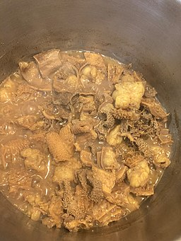

Photo by: EAT&ART TARO,
CC BY-SA 4.0,
via Wikimedia Commons
Description
Mala mogodu is a sesotho name for beef tripe dish. It is a delicious meal that is commonly cooked in
rural communities. It is also found in the bustling taxi ranks of Johanneburg, where it is served with
pap or phuthu pap.
Ingredients
1 kg Beef Tripe
1 Onion Finely chopped
1 Green Pepper Finely chopped
2 Beef Stock Cubes
½ tsp Salt
Water
Steps
Clean tripe thoroughly and chop into bite size pieces.
Add tripe to pot with enough water to cover tripe and bring to boil. Once boiling reduce heat
and allow to simmer for 2 hours with the pot closed.
Add your onion, green pepper, stock cubes and salt. Allow to simmer for another 45 minutes.
stir pot every 15 minutes.